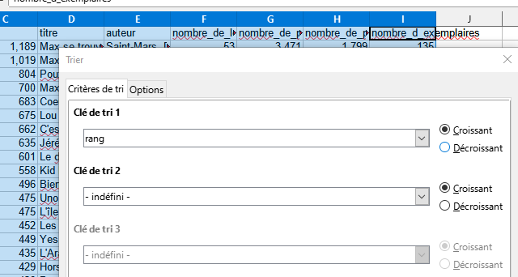

Origine des données
La Mairie de Paris a mis à disposition la liste des 1000 références de livre, DVD, jeux de société, etc. les plus empruntées au sein des bibliothèques municipales de la ville de Paris. Les données sont librement disponibles sur le site https://www.data.gouv.fr/, la plateforme de données ouvertes publiques de l'État français.
Les données ouvertes ou open data sont des données numériques dont l'accès et l'usage sont laissés libres de droits aux usagers. Ces données offrent de nombreuses opportunités pour étendre le savoir humain et créer de nouveaux produits et services de qualité.
Ces données sont proposées sous trois formats de fichier différents identifiables par les extensions de noms:
- les-titres-les-plus-pretes.csv
- les-titres-les-plus-pretes.json
- les-titres-les-plus-pretes.xls
Format CSV
Dans cette première partie, on s’intéresse au fichier « les-titres-les-plus-pretes.csv ».
Ce sont les métadonnées du fichier.
Quel caractère sépare les données les unes des autres ?
La première ligne contient les descripteurs des données. Quels sont ils ?
On peut stocker des données dans un fichier csv (pour Comma Separated Values) :
- C'est un format de fichier texte, ouvert qui peut être créé, lu et modifié par tous les logiciels.
- Les données sont séparées par des virgules, des points virgules, ou encore des tabulations, « | », etc.
- La première ligne contient (souvent) des informations qui caractérisent les données : les descripteurs.
- Chaque ligne contient les données sur un objet ou une personne : une entrée.
Format JSON
Dans cette partie, on s’intéresse au fichier « les-titres-les-plus-pretes.json».
Observer comment les données sont groupées sous forme de blocs délimités entre accolades. Ici, chaque données est représentée par une paire « clé » / « valeur ».
On peut stocker des données dans un fichier json (pour JavaScript Object Notation) :
- C'est un format de fichier texte, ouvert qui peut être créé, lu et modifié par tous les logiciels.
- Les données sont des blocs de paires « clés » / « valeur.
- Bien qu’utilisant une notation JavaScript, JSON est indépendant du langage de programmation.
Fichier XLS
Dans cette partie, on s’intéresse au fichier « les-titres-les-plus-pretes.xls».
Les fichiers xls ou ods sont des fichiers destinés à être lus par des tableurs.
Un tableur est un logiciel capable de manipuler des données présentées dans des feuilles de calcul avec de nombreuses possibilités : faire des recherches sur des données, des calculs, des analyses statistiques, représenter des données sous formes graphiques, etc.
De nombreux tableurs existent, parmi mes plus connus on trouve :
- Calc, le tableur de la suite bureautique LibreOffice (anciennement OpenOffice) est un logiciel libre et gratuit ;
- Excel, le tableur de la suite bureautique Office de Microsoft est un logiciel propriétaire et payant.
Un logiciel propriétaire, par opposition à un logiciel libre ne permet pas l'étude ou la modification de son code source ni la distribution de copies. La plupart des logiciels propriétaires sont payants et la plupart des logiciels libres sont gratuits, mais ce n'est pas toujours le cas.
Un fichier destiné à être lu par un tableur s'appelle un classeur. Par défaut, Calc utilise des fichiers enregistrés au format .ODS, alors qu'Excel utilise le format .XLS. XLS est un format fermé, propres à Microsoft alors qu’ODS est un format ouvert, mais les deux tableurs peuvent lire les deux formats.
Une feuille est divisée en lignes et colonnes. Les colonnes sont numérotées à l'aide de lettre (A, B, C), et les lignes à l'aide de chiffres (1, 2, 3). A l'intersection des lignes et des colonnes on trouve des cases appelées cellules.
Chaque cellule a une adresse que l'on appelle référence. Par exemple la cellule en ligne 2 et colonne B a pour référence "B2" (mais pas "2B" !).
A l'intérieur d'un classeur on trouve souvent plusieurs feuilles de calcul. On passe de feuille en feuille en cliquant sur les onglets en bas des feuilles.
Sur chaque onglet, il y a le nom de la feuille ("Feuil 1" Feuil 2"...)
Trier les données
Quand on ouvre le fichier, les références de livres, DVD, jeux de société, etc. ne sont pas triées. Il faut les trier par leur rang, en colonne A.
- Si vous utilisez Calc, sélectionner le menu Données > Trier puis choisir pour Clé de tri 1 : rang 
- Si vous utilisez Excel, cliquer sur l'icône dans le menu Données puis choisir Trier par rang.
Et celui de la moins empruntée ?
et les titres des références qui ont le moins d'exemplaires ?
Filtrer les données
Maintenant on ne s’intéresse uniquement qu'aux références de livres, DVD, jeux de société, etc. du type « Livre pour adulte ». Pour se faire on va utiliser un filtre.
Les filtres permettent de sélectionner des données selon certains critères ou certaines conditions dans des menus déroulants.
- Si vous utilisez Calc, sélectionner le menu Données > Autofiltre .
- Si vous utilisez Excel, cliquer sur l'icône dans le menu Données.
Et celui de la moins empruntée ?
et le titre de la référence qui a le moins d'exemplaires ?
Calculer sur les données
Le tableur permet de faire des calculs sur les données numériques en utilisant des formules.
La saisie d'une formule se fait en sélectionnant une cellule puis en utilisant la barre de formules. Pour entrer une formule il suffit de commencer la saisie par le signe d'égalité (=) puis d'entrer les références des cellules à utiliser et éventuellement des opérateurs et/ou des fonctions.
Certains titres sont souvent empruntés alors qu'ils n'ont que peu d'exemplaires disponibles. Il faut sans doute en acheter plus d'exemplaires. Mais quels sont ces titres ? On va ajouter une colonne pour afficher le nombre de prêt divisé par le nombre d'exemplaires pour chaque référence de livres, DVD, jeux de société, etc..
- Si vous utilisez Calc, sélectionner le menu Données > Autofiltre .
- Si vous utilisez Excel, cliquer sur l'icône dans le menu Données.
= C2 / I2
Copier cette formule vers le bas pour renseigner le nombre de prêt divisé par le nombre d'exemplaires pour toutes les références. Observer comment les numéros de ligne sont mis à jour dans chaque ligne.
De la même façon, certains titres sont souvent empruntés alors qu'ils ne sont disponibles que dans très peu de localisations. Il faut aussi en acheter plus d'exemplaire.
Copier cette formule vers le bas pour renseigner le nombre de prêt par localisations pour toutes les références.
Utiliser des macros
Quand on effectue fréquemment certaines tâches, on peut utiliser une macro pour les automatiser.
Une macro est un programme informatique inclus dans un classeur permettant d'automatiser certaines taches. Le langage de programmation est souvent une version du langage BASIC : VBA (Visual Basic Application) pour Excel ou LibreOffice Basic pour Calc.
La suite de cette activité est réalisée avec Excel uniquement. Si vous utilisiez Calc, ouvrez le fichier avec Excel.
Nous allons faire une macro qui permet de trier le fichier par la colonne rang. Plutôt que d'écrire la macro, nous allons l'enregistrer.
Une fenêtre s'ouvre, cliquer sur OK (sans changer les paramètres de la fenêtre).
Attention, l'enregistrement a commencé !
Rappel : Sélectionner l'ensemble des colonnes A à I puis cliquer sur l'icône dans le menu Données puis trier par rang,
Macro > Arrêter l'enregistrement.
Excel a enregistré vos manipulations et les a traduites en code VBA.
Ce code correspond aux manipulations enregistrées. Analysons le code généré :
Sub et End Sub délimitent le début et la fin de la macro, Macro1() correspond au nom de cette macro :
Sub Macro1()
End Sub
Le texte précédé d'une apostrophe (en vert) est un commentaire, il n'est pas pris en compte à l'exécution du code. On peut par exemple écrire :
'
' trier_par_rang() permet de trier les données en rang croissant
'
'
observer le reste du code. Excel a enregistré les lignes de code suivantes (votre code peut-être légèrement différent si l'enregistrement s'est fait différemment) :
Sub trier_par_rang()
'
' trier_par_rang() permet de trier les données en rang croissant
'
'
Columns("A:I").Select
ActiveWorkbook.Worksheets("Sheet").Sort.SortFields.Clear
ActiveWorkbook.Worksheets("Sheet").Sort.SortFields.Add Key:=Range("A2:A826") _
, SortOn:=xlSortOnValues, Order:=xlAscending, DataOption:=xlSortNormal
With ActiveWorkbook.Worksheets("Sheet").Sort
.SetRange Range("A1:I826")
.Header = xlYes
.MatchCase = False
.Orientation = xlTopToBottom
.SortMethod = xlPinYin
.Apply
End With
End Sub
Sans rentrer dans le détail du code, on observe deux instructions principales permettant de réaliser ce tri :
-
Columns("A:I").Select pour selectionner les colonnes A à I -
ActiveWorkbook.Worksheets("Sheet").Sort...réalise le tri avec une clé de tri Range("A2:A826") sur toute la zone Range("A1:I826").
On veut maintenant que cette macro s'exécute en cliquant sur un bouton.
Tracer un bouton sur la feuille de calcul. Une fenêtre s'ouvre qui permet d'affecter la macro trier_par_rang() à ce bouton. Cliquer sur OK pour valider.
On peut faire un clic-droit sur le bouton pour modifier le texte en « Trier par rang »
Lorsque vous cliquerez sur le bouton, la macro sera exécutée :

Note : Dans certaines versions d'Excel, le contrôle de formulaires pour insérer des boutons est placé au dessus de la barre de menu
: